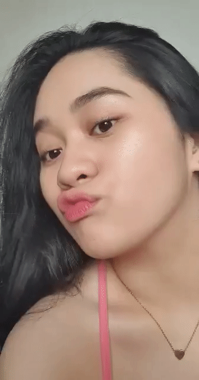

Hi labidabs happy 9th motmot ulet iloveyouusomuchhh thank u for stayiiing kahit na may toyo ako HAHA alam mo nmn na kung gano kita kamahal e...wala kang kawala sakin tangina mo hahanap hanapin kita. Lapit na mag 1 yr pero lapit narin tayo magkahiwalay ng school huhu... basta ako promise ko sayo ikaw parin at ikaw lang pipiliin ko hanggang dulo. Pag may lumandi man sayong mga haliparots dyan na mukhang ipis sabihin mo meron kang girlfriend maganda matalino at sobraaaaaaaaaaang sexyyy!!! Wala na pong tatalo sakanya nasakanya na lahat at kayang kaya ka ibalibag! GANORN HAHA o kaya wag mo na pansinin tutal masungit ka nmn dba!! Ayoko ung pili lng ung babaeng susungitan mo ha tse!! Goodluck sa exam mo sa pup pagbutihan mo alam ko nmng kayang kaya mo yun ipasa, suss bebe ko pa ba? talino yan ih nasa d league pa shet HAHAHA. Basta nandto lng ako palagi to support u iloveu.. kung pede lng na sa tabi ko palagi ikaw nako hahaha kaso hinde e kailangan natin maghiwalay ng school 🙁. Palagi kang magiingat ha seryoso triple ingat ka palagi love nakooo kung ikaw masagasaan makidnap o marape dyan sa daan nako para narin akong pinatay kung may nangyari sayong masama. Lalo na't kung makapasa ka sa pup ang layo layo non. Baka mawalan ka ng time sakin pero sana meron parin ahuuu mababaliw ako HAHA kaya manage ur time well ha? kahit di ganun kahabang oras bigay mo sakin basta wag mo lng ako kalimutan ...wag ka manlamig ha love takot ako baka bigla kang manlamig HAHA baka sabihin mong pagod pagod ka lang pero un palaa... HAAAY WAG NAMAN SANAAAA MABABALIW TLGA AKO LOOOOORD HAHA....
pero ayon love mo nmn ako e panindigan mo yan ah kahit na di PA ako marunong magluto sana di ka magdalawang isip na ituloy relationship naten HAHA pota magaaral nmn ako magluto para sau ahuuu para pag kunwari galing kang work or whatevah paguwi mo lulutuan kita ganooorn..Pag di tlga ako natuto magluto edi sex nlng for breakfast lunch and dinner HAHA CHAR. Pagbutihan ko para deserving nmn ako kay joshua ivan b. seda hakhak.. iloveu my boyfrieeeeend ❤️🥺 napaka swerte ko tlga sayo tanginaaaa hahaha di na kita papakawalan tlga..parating palang pasko pero sobrang napaaga pamasko ni Lord saken haha shet. Promise me ha magtatapos tayong pagaaral magttrabaho tayo at magiipon oke? at pakasalan moko pls 🥺.. HAHAHAHAHAHA NAGMAKAAWA. pero seryoso nga sabihin mo mang maaga pa para isipin yon pero wala ee gusto ko tlga ikaw na makasama ko tangina haha i mean para san pa ung pagpapasok sa isang relationship kung la ka nmng balak pakasalan taong yun dba? haaayyy asawa koooo sarap cguro nooon haha wala nmng imposible love gawin nating lahat para magwork ha? laban lng hehe iloveyouuu!!

Hi Love! First of all, Happy 8th Monthsary❤️ hehe. Alam mo namang mahal na mahal kita e diba hahaha. Tiisin mo lang tong asawa mo hinding hindi ka iiwan nito. Puro ganyan lang yang jowa mo pero du ka iiwan niyan. Ikaw na nga topic namin ni mama e PaAALagi!! hahhaha. Sabi ko sayo boyfriend mo na dapat ako e. Para wala na kong dahilan pag iniwan kita kasi M.U lang tayo hahahaha walang label nyak. Sabi mo pinakamatagal mo 6 months, ngayon 8 months na tayo hahaha. Hindi naman yung tagal yung pinaguusapan, ang pinakaimportante yung mga masasayang bagay na pinagsamahan natin hahaha..
Love, wala pa tayong one year pero dami na nating pinagaawayan hahaha eh ang dahilan lang naman ang pagiging immature hahahhaha. Sorry sa lahat ng mga bagay na nagawa ko na di mo nagustuha hehe. Madami akong kalokohan hahahaha pero alam mo naman na lahat. Balik tayo sa dati, alam mo love di ko naman inexpect na magtatagal tayo mg ganito. Eh kilala mo naman ako e hahahha pag tinamad na ko wala na bye naaaa hahahha. Pero ngayon pag nawala ka tangina mo hahahahaha kahit saan ka magpunta hahanapin kita. Tsaka pag nagaaway tayo wag mong masyadong dibdibin hahaha iyak ka agad e. Alam ko namang mahal na mahal moko pero dapat matibay ka. In every relationship dapat may natututunan tayo, seryoso man yan o hindi.
Kasi kapag natuto ka na sa mga bagay na nasaktan ka, matututo karin ianticipate yun para di na mangyari ulit. Sorry sa mga bagay na nagsisinungaling ako huhu. Nagagawa ko lang yun kasi ayaw kong maturn off ka sskin e huhu. Basta yon lahat babe dami ko namang sinasabi hahahhaha. Pasalamat ka wala kong ginagawa hahaha iloveyou so much hehe. Di na tayo maghihiwalay nito love e hahaha kahit lumipat ka ibang school ikaw parin e. Hindi ka naman tumatakbo at malayo pa yung eleksyon pero boto na si mama sayo. Si papa di naman showy yun e hahahaha pag nalalasing lang nagsasalita ng totoo yun pero gusto ka niya. Happy motmot ulit love hehe iloveyousomuch!!! May tatanong lang ako hahaha. Love, can u be my official girlfriend? Wala ng M.U pambata yun e at ayoko na nun pleaseğŸ˜ğŸ˜”
Hi labidabs happy 9th motmot ulet iloveyouusomuchhh thank u for stayiiing kahit na may toyo ako HAHA alam mo nmn na kung gano kita kamahal e...wala kang kawala sakin tangina mo hahanap hanapin kita. Lapit na mag 1 yr pero lapit narin tayo magkahiwalay ng school huhu... basta ako promise ko sayo ikaw parin at ikaw lang pipiliin ko hanggang dulo. Pag may lumandi man sayong mga haliparots dyan na mukhang ipis sabihin mo meron kang girlfriend maganda matalino at sobraaaaaaaaaaang sexyyy!!! Wala na pong tatalo sakanya nasakanya na lahat at kayang kaya ka ibalibag! GANORN HAHA o kaya wag mo na pansinin tutal masungit ka nmn dba!! Ayoko ung pili lng ung babaeng susungitan mo ha tse!! Goodluck sa exam mo sa pup pagbutihan mo alam ko nmng kayang kaya mo yun ipasa, suss bebe ko pa ba? talino yan ih nasa d league pa shet HAHAHA. Basta nandto lng ako palagi to support u iloveu.. kung pede lng na sa tabi ko palagi ikaw nako hahaha kaso hinde e kailangan natin maghiwalay ng school 🙁. Palagi kang magiingat ha seryoso triple ingat ka palagi love nakooo kung ikaw masagasaan makidnap o marape dyan sa daan nako para narin akong pinatay kung may nangyari sayong masama. Lalo na't kung makapasa ka sa pup ang layo layo non. Baka mawalan ka ng time sakin pero sana meron parin ahuuu mababaliw ako HAHA kaya manage ur time well ha? kahit di ganun kahabang oras bigay mo sakin basta wag mo lng ako kalimutan
wag ka manlamig ha love takot ako baka bigla kang manlamig HAHA baka sabihin mong pagod pagod ka lang pero un palaa... HAAAY WAG NAMAN SANAAAA MABABALIW TLGA AKO LOOOOORD HAHA... pero ayon love mo nmn ako e panindigan mo yan ah kahit na di PA ako marunong magluto sana di ka magdalawang isip na ituloy relationship naten HAHA pota magaaral nmn ako magluto para sau ahuuu para pag kunwari galing kang work or whatevah paguwi mo lulutuan kita ganooorn..Pag di tlga ako natuto magluto edi sex nlng for breakfast lunch and dinner HAHA CHAR. Pagbutihan ko para deserving nmn ako kay joshua ivan b. seda hakhak.. iloveu my boyfrieeeeend ❤️🥺 napaka swerte ko tlga sayo tanginaaaa hahaha di na kita papakawalan tlga..parating palang pasko pero sobrang napaaga pamasko ni Lord saken haha shet. Promise me ha magtatapos tayong pagaaral magttrabaho tayo at magiipon oke? at pakasalan moko pls 🥺.. HAHAHAHAHAHA NAGMAKAAWA. pero seryoso nga sabihin mo mang maaga pa para isipin yon pero wala ee gusto ko tlga ikaw na makasama ko tangina haha i mean para san pa ung pagpapasok sa isang relationship kung la ka nmng balak pakasalan taong yun dba? haaayyy asawa koooo sarap cguro nooon haha wala nmng imposible love gawin nating lahat para magwork ha? laban lng hehe iloveyouuu!!
hii sa mahal kong nagpapasend ng lsm.. ang baby ko tolgooo nanlalambing abaaaaaa HAHAHAHA so ayun pano ko ba toh sisimulan hmm well pangpagana mo nmn toh bukas sa laro so ayun unahin ko muna yun, galingan mo bukas babyy!! 💛 alam mo nmng lodi kita kahit ano pa maging stats mo.. kahit gano man kalaki or kalaki naambag mo, kahit maging 0 0 pa yan okay lang, i will and always be proud of youu!! palagi kang magiging mvp sa buhay ko 😚 basta kung hindi ka nakuntento sa game mo marami pang chance para bumawi. wag mo masyado istressin sarili mo.. sorry kung hindi pako makapunta sa mga laro mo :(( peroo promiseeeee makakapanood din ang no. 1 fan mo para suportahan at icheer ka. wag mo kalimutan na magingat palagi by tuwing maglalaro, nakoo kung may nangyari sayong masama uupakan kta hakhak. wag mo rin kalimutan magpahinga di ka robot ha i repeat di ka robot tao ka tAO na kailangan ng pahinga!
kahit tulugan moko ilang beses okay langg kasi i understand kahit gusto kita iflood ng mssgs at tawagan para magising mas gugustuhin ko nlng na makatulog ka na para makapagpahinga ka coz that's what my baby nEEDS. kumain ka rin sa tamang oras kupal ka wag magpapalipas ng kain kundi ako kakain sayo, charot ako magpapakain sayo* hihe. bastaaa wag mo kalimutan na nandto lang ako palagi para sayo lovee huhu love na love kita.. i promisee ikaw lang ang tANGI KOng mamahalin 💛 I'll be a faithful and loyal baby to youu. i wanna thank youu for making me happy and kilig everyday hihi 🙈❤️palagi mong kinukuryente loob looban ko HAHA 😝..habang dumadaan ung mga araw mas naiinlove lng ako sa baby ko, I'll never get tired of youuu loveee di ako magsasawa kahit plagi mokong inaaway haha charot, magiging consistent parin akoo. kung dumating man ung araw na nagaway tayo na medyo malala i hope na di natin hahayaan ung isa't isa na matulog na mabigat dibdib, before the day ends promise me that we'll work it out. kasii i sweaaaaaarrr di ko kakayanin pag di tayo bati huhu iiyak ako :<.. pero ayun hihi alam ko nmng lab moko kaya wag mo nako awayin ha? hehe jk. nakoo subukan mo lng akong ighost tulad nung ginawa mo sa past relationship mo huhuntingin tlga kita!!! wag moko iwan ha ahu kasii grabEeEEee masasaktan ako nang bongga :(( hehe pero i know nmn that u won't do it pero ayon para lang alam mo 😛,
buti nlng tlga nakikilala kta babyyyy napaka swerte ko tlga sayo huhu.. di nako makapaghintay na ipakikila ka sa buong angkan ko, pag naging legal na tayo baka sumabog ako sa saya love HAHA pag naging legal palang yun ah pano pa kaya pag umabot pa sa kasal aBA my heart shet I'll be the happiest woman on earth 😢❤️.. isipin mo senior high couple to married couple shet so rARE tapos honeymoon everyday HAHA joke lang, tas meron tayong 5 triplets kung kakayanin man ng pepe ko ilabas yon hehe well pede pa nmn sa tiyan HAHA jk lng ulet.. well di nmn imposible na ikasal kung kakapit lng tayo 💛 hayy grabeeee babyy baliw na baliw nako sayo huhu sarap mo kasi eeehhh....sarap mo magmahal 😂😋 hihi,
parang ngayon ko lng nadama ung totoong pagmamahal talaga haha and I'm so thankful for that byy, thank you for loving me ğŸ˜â¤ï¸ for accepting me kahit gano pa ako ka buang minsan, i hope na di ka magsasawa sa mga kaartehan kakulitan kamanyakan kadramahan kagaguhan ko huhu.. i also appreciate all your efforts big or small, tuwing kinakantahan moko at sa mga simpleng vm mo, thank you for always making me feel beautiful kahit na average gurl lang nmn si acoe ahu thank you for everything tangiii mahal na mahal kitaaaa di mo alam kung gano kalaki ung nagagawa mong impact sa buhay ko 💛 crush na crush din kita huhu tuwing nakikita kita para akong nalolove at first second third fourth fifth sight, syempre and so on pa yon hihi 😙.. wag mo papabayaan pagaaral mo sabay dapat tayo makapagtapos para sabay natin makamit mga pangarap natin kasi i'd love to have a future kasama baby ko. kung mangyari man na magkahiwalay tayo sana ikaw at ako parin sa huli :((.. pero I'm not forcing you ha? you're free babyyy na magkagusto sa iba, di kita pipilitin pero oo ittry kong pigilan ka, kasi mahal kita e hahaha yoq pakawalan ka agad agad syempre ipaglalaban kta noh. basta babyyy i promise I'll do my best to love and make you happy everyday coz that's what a guy like you deserves. yeeesss deserve mo rin lahat ng love and care and happiness and efforts by hindi lng ako. iloveyou so much my baby tangiiii thank you for making me special ğŸ˜ğŸ’› God has poured me with so many blessings at ikaw ung paborito ko 💛🙏🏻